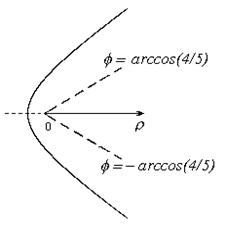

П 10. №9.
Постройте в полярной системе координат линию
Решение:
,
 .
.При этом .
Переходя к декартовым координатам, получаем
,
,
– правая ветвь гиперболы
при указанных  .
.
.Кривую можно было построить по точкам, например, при получаем .

Ответ: Правая ветвь гиперболы